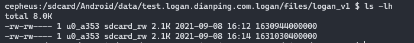

日志库 Logan
简介
Logan 是 美团点评技术团队 开源的包含前端 SDK 和后端 Server 的一整套日志系统，也是公司日志库 VLog 的基础
Logan Android SDK 提供了这么几个 API：
| API | Description |
|---|---|
| Logan#w(log, type) | 写日志（严谨地说应该是发送日志请求，因为日志是放在消息队列里等待被处理的） |
| Logan#init | 初始化 |
| Logan#f | Logan 内部有个内存缓存（memory/mmap），日志首先被写入到缓存里，只有到达一定大小时（1/3）才写入文件，这里请求立刻写入到文件里去 |
| Logan#s | 根据日期 获取/发送 日志文件 |
| Logan#getAllFilesInfo | 获取所有的日志文件，key 是日期，value 是日志文件大小 |
| Logan#setDebug | 设置为 debug 模式后，会有更加详细的 native 日志，但是默认实现只是输出到 stdout 没有写入 android log |
| Logan#setOnLoganProtocolStatus | 可以拿到一些 Java 的关键日志 |
LoganConfig 是初始化配置参数：
| Field | Description |
|---|---|
| path | 存放日志文件的目录，日志是按日期（天）存放的，文件名是当天零时零分零秒的时间戳 |
| cachePath | 内存缓存对应的 mmap 文件所在的目录 |
| maxFile | 当日志文件超过此大小时，就不能再继续往 buffer 里写入日志 |
| day | 只保留 n 天内的日志文件，旧的都删掉 |
| minSDCard | 当可用的存储容量超过此阈值时才写入日志 |
| encryptKey16 | AES 加密参数 KEY |
| encryptIv16 | AES 加密参数 IV |
日志队列与 生产者-消费者 模型
调用 Logan.w 的线程是日志的生产者，日志写入请求被放入日志队列（Queue）里等待处理，LoganThread 线程作为消费者不断地执行日志队列里的任务
public class Logan {
/**
* @param log 表示日志内容
* @param type 表示日志类型
* @brief Logan写入日志
*/
public static void w(String log, int type) {
if (sLoganControlCenter == null) {
throw new RuntimeException("Please initialize Logan first");
}
sLoganControlCenter.write(log, type);
}
}
class LoganControlCenter {
private ConcurrentLinkedQueue<LoganModel> mCacheLogQueue = new ConcurrentLinkedQueue<>();
private LoganThread mLoganThread;
void write(String log, int flag) {
if (TextUtils.isEmpty(log)) {
return;
}
LoganModel model = new LoganModel();
model.action = LoganModel.Action.WRITE;
WriteAction action = new WriteAction();
String threadName = Thread.currentThread().getName();
long threadLog = Thread.currentThread().getId();
boolean isMain = false;
if (Looper.getMainLooper() == Looper.myLooper()) {
isMain = true;
}
action.log = log;
action.localTime = System.currentTimeMillis();
action.flag = flag;
action.isMainThread = isMain;
action.threadId = threadLog;
action.threadName = threadName;
model.writeAction = action;
if (mCacheLogQueue.size() < mMaxQueue) {
mCacheLogQueue.add(model);
if (mLoganThread != null) {
mLoganThread.notifyRun();
}
}
}
private void init() {
if (mLoganThread == null) {
mLoganThread = new LoganThread(mCacheLogQueue, mCachePath, mPath, mSaveTime,
mMaxLogFile, mMinSDCard, mEncryptKey16, mEncryptIv16);
mLoganThread.setName("logan-thread");
mLoganThread.start();
}
}
}
class LoganThread extends Thread {
@Override
public void run() {
super.run();
while (mIsRun) {
synchronized (sync) {
mIsWorking = true;
try {
LoganModel model = mCacheLogQueue.poll();
if (model == null) {
mIsWorking = false;
sync.wait();
mIsWorking = true;
} else {
action(model);
}
} catch (InterruptedException e) {
e.printStackTrace();
mIsWorking = false;
}
}
}
}
}内存缓存 Buffer
并不是每次日志请求都立刻写入到日志文件里，而是在内存中开辟一段缓存（默认为 150K）作为 buffer，当 buffer 里的数据积累得足够多时（1/3 buffer 大小）才写入文件
LoganThread.doWriteLog2File
LoganProtocol.logan_write
CLoganProtocol.logan_write
CLoganProtocol.clogan_write
Java_com_dianping_logan_CLoganProtocol_clogan_1write
clogan_write
clogan_write_section
void clogan_write2(char *data, int length) {
if (NULL != logan_model && logan_model->is_ok) {
clogan_zlib_compress(logan_model, data, length); // 压缩和加密后的数据放在内存 buffer 里
update_length_clogan(logan_model);
int is_gzip_end = 0;
} else if (buffer_type == LOGAN_MMAP_MMAP &&
logan_model->total_len >=
buffer_length / LOGAN_WRITEPROTOCOL_DEVIDE_VALUE) { // 只有当数据大小到达阈值（1/3 buffer 容量）时才写入文件
isWrite = 1;
printf_clogan("clogan_write2 > write type MMAP \n");
}
if (isWrite) { // 写入文件
write_flush_clogan();
}
}mmap
当 APP 因为崩溃而被 kill 或者被其他进程 kill 时，保存在内存中的日志缓存就会失去回写文件的机会，从而导致日志的丢失
使用 mmap 可以在虚拟内存中开辟一片内存空间作为 buffer，它对应了一个 file backed，系统会选择合适的机会将 buffer 回写至文件，而且在进程被 kill 时系统可以确保 buffer 被正确地回写，确保进程异常时不会丢失日志
mmap file 位于 {cacheDir}/logan_cache/logan.mmap2，buffer 和 mmap file 的大小默认为 150K
#ifndef LOGAN_MMAP_LENGTH
#define LOGAN_MMAP_LENGTH 150 * 1024 //150k
#endif
// 创建MMAP缓存buffer或者内存buffer
// _filepath: mmap file 地址
// buffer: mmap buffer
// cache: 如果 mmap 失败则使用内存缓存
int open_mmap_file_clogan(char *_filepath, unsigned char **buffer, unsigned char **cache) {
int back = LOGAN_MMAP_FAIL;
if (NULL == _filepath || 0 == strnlen(_filepath, 128)) {
back = LOGAN_MMAP_MEMORY;
} else {
unsigned char *p_map = NULL;
int size = LOGAN_MMAP_LENGTH;
int fd = open(_filepath, O_RDWR | O_CREAT, S_IRUSR | S_IWUSR | S_IRGRP | S_IWGRP); //后两个添加权限
int isNeedCheck = 0; //是否需要检查mmap缓存文件重新检查
if (fd != -1) { //保护
int isFileOk = 0;
FILE *file = fopen(_filepath, "rb+"); //先判断文件是否有值，再mmap内存映射
if (NULL != file) {
fseek(file, 0, SEEK_END);
long longBytes = ftell(file);
if (longBytes < LOGAN_MMAP_LENGTH) {
fseek(file, 0, SEEK_SET);
char zero_data[size];
memset(zero_data, 0, size);
size_t _size = 0;
_size = fwrite(zero_data, sizeof(char), size, file);
fflush(file);
if (_size == size) {
printf_clogan("copy data 2 mmap file success\n");
isFileOk = 1;
isNeedCheck = 1;
} else {
isFileOk = 0;
}
} else {
isFileOk = 1;
}
fclose(file);
} else {
isFileOk = 0;
}
if (isNeedCheck) { //加强保护，对映射的文件要有一个适合长度的文件
FILE *file = fopen(_filepath, "rb");
if (file != NULL) {
fseek(file, 0, SEEK_END);
long longBytes = ftell(file);
if (longBytes >= LOGAN_MMAP_LENGTH) {
isFileOk = 1;
} else {
isFileOk = 0;
}
fclose(file);
} else {
isFileOk = 0;
}
}
if (isFileOk) {
p_map = (unsigned char *) mmap(0, size, PROT_READ | PROT_WRITE, MAP_SHARED, fd, 0);
}
if (p_map != MAP_FAILED && NULL != p_map && isFileOk) {
back = LOGAN_MMAP_MMAP;
} else {
back = LOGAN_MMAP_MEMORY;
printf_clogan("open mmap fail , reason : %s \n", strerror(errno));
}
close(fd);
if (back == LOGAN_MMAP_MMAP &&
access(_filepath, F_OK) != -1) { //在返回mmap前,做最后一道判断，如果有mmap文件才用mmap
back = LOGAN_MMAP_MMAP;
*buffer = p_map;
} else {
back = LOGAN_MMAP_MEMORY;
if (NULL != p_map)
munmap(p_map, size);
}
} else {
printf_clogan("open(%s) fail: %s\n", _filepath, strerror(errno));
}
}
int size = LOGAN_MEMORY_LENGTH;
unsigned char *tempData = malloc(size);
if (NULL != tempData) {
memset(tempData, 0, size);
*cache = tempData;
if (back != LOGAN_MMAP_MMAP) {
*buffer = tempData;
back = LOGAN_MMAP_MEMORY; //如果文件打开失败、如果mmap映射失败，走内存缓存
}
} else {
if (back != LOGAN_MMAP_MMAP)
back = LOGAN_MMAP_FAIL;
}
return back;
}flush 回写日志文件
因为有 buffer 的存在，Logan.w(log, type) 先将日志写入内存缓存，只有当缓存超过阈值（50K）时才回写文件系统，Logan.f() 使 buffer 立刻回写至文件系统
使用 fopen、fseek、ftell、fwrite、fflush、fclose 等高级 IO API，它们是具有缓存的
Logan.f()
LoganControlCenter.flush()
LoganThread.doFlushLog2File()
LoganProtocol.logan_flush()
CLoganProtocol.logan_flush()
CLoganProtocol.clogan_flush()
Java_com_dianping_logan_CLoganProtocol_clogan_1flush
clogan_flush
void write_flush_clogan() {
if (logan_model->zlib_type == LOGAN_ZLIB_ING) {
clogan_zlib_end_compress(logan_model);
update_length_clogan(logan_model);
}
if (logan_model->total_len > LOGAN_WRITEPROTOCOL_HEAER_LENGTH) {
unsigned char *point = logan_model->total_point;
point += LOGAN_MMAP_TOTALLEN;
write_dest_clogan(point, sizeof(char), logan_model->total_len, logan_model);
printf_clogan("write_flush_clogan > logan total len : %d \n", logan_model->total_len);
clear_clogan(logan_model);
}
}
//文件写入磁盘、更新文件大小
void write_dest_clogan(void *point, size_t size, size_t length, cLogan_model *loganModel) {
if (!is_file_exist_clogan(loganModel->file_path)) { //如果文件被删除,再创建一个文件
if (logan_model->file_stream_type == LOGAN_FILE_OPEN) {
fclose(logan_model->file);
logan_model->file_stream_type = LOGAN_FILE_CLOSE;
}
if (NULL != _dir_path) {
if (!is_file_exist_clogan(_dir_path)) {
makedir_clogan(_dir_path);
}
init_file_clogan(logan_model);
printf_clogan("clogan_write > create log file , restore open file stream \n");
}
}
if (CLOGAN_EMPTY_FILE == loganModel->file_len) { //如果是空文件插入一行CLogan的头文件
insert_header_file_clogan(loganModel);
}
fwrite(point, sizeof(char), logan_model->total_len, logan_model->file);//写入到文件中
fflush(logan_model->file);
loganModel->file_len += loganModel->total_len; //修改文件大小
}日志文件
日志文件保存在目录 LoganConfig.Builder.setPath(path)，日志按日期存储，文件名是日期当天零时零分零秒的 时间戳

日志经过 gzip 压缩和 AES 加密，其格式是 JSON，每个日志文件的第一条总是 clogan header
{
"c":"clogan header", // 日志内容
"f":1, // flag，Logan.w(log, type) 中的 type 传入
"l":"init", // local time，本地时间
"n":"clogan", // thread name，线程名称
"i":1, // thread id，线程 ID
"m":true // main thread，是否主线程
}
{
"c":"I/Fridge-okhttp.OkHttpClient：[ (AndroidLog.kt:84)#androidLog$okhttp ] [ (AndroidLog.kt:39)#publish ] domain: video",
"f":4,
"l":"2021-09-07 00:00:00.000",
"n":"RxCachedThreadScheduler-15",
"i":174,
"m":false
}
{
"c":"I/Fridge-okhttp.OkHttpClient：[ (AndroidLog.kt:84)#androidLog$okhttp ] [ (AndroidLog.kt:39)#publish ] Authorization_v1: U5xQjeKDh4Dkgx4Z",
"f":4,
"l":"2021-09-07 00:00:00.001",
"n":"RxCachedThreadScheduler-15",
"i":174,
"m":false
}每次写日志时，都会判断下当前日期是否与日志文件的日期一致；如果不一致说明跨天了，创建当天的日志文件，并删除 LoganConfig.Builder.setDay(long) 前的日志文件
class LoganThread extends Thread {
private void doWriteLog2File(WriteAction action) {
if (Logan.sDebug) {
Log.d(TAG, "Logan write start");
}
if (mFileDirectory == null) {
mFileDirectory = new File(mPath);
}
if (!isDay()) {
long tempCurrentDay = Util.getCurrentTime();
//save时间
long deleteTime = tempCurrentDay - mSaveTime;
deleteExpiredFile(deleteTime);
mCurrentDay = tempCurrentDay;
mLoganProtocol.logan_open(String.valueOf(mCurrentDay));
}
long currentTime = System.currentTimeMillis(); //每隔1分钟判断一次
if (currentTime - mLastTime > MINUTE) {
mIsSDCard = isCanWriteSDCard();
}
mLastTime = System.currentTimeMillis();
if (!mIsSDCard) { //如果大于50M 不让再次写入
return;
}
mLoganProtocol.logan_write(action.flag, action.log, action.localTime, action.threadName,
action.threadId, action.isMainThread);
}
}写入失败
有以下原因会导致日志写入失败：
- 日志内容为空
class LoganControlCenter {
void write(String log, int flag) {
if (TextUtils.isEmpty(log)) {
return;
}
// ...
}
}- 任务队列满了
class LoganControlCenter {
private long mMaxQueue; // 最大队列数
private LoganControlCenter(LoganConfig config) {
if (!config.isValid()) {
throw new NullPointerException("config's param is invalid");
}
mPath = config.mPathPath;
mCachePath = config.mCachePath;
mSaveTime = config.mDay;
mMinSDCard = config.mMinSDCard;
mMaxLogFile = config.mMaxFile;
mMaxQueue = config.mMaxQueue;
mEncryptKey16 = new String(config.mEncryptKey16);
mEncryptIv16 = new String(config.mEncryptIv16);
init();
}
void write(String log, int flag) {
// ...
if (mCacheLogQueue.size() < mMaxQueue) {
mCacheLogQueue.add(model);
if (mLoganThread != null) {
mLoganThread.notifyRun();
}
}
}
}
public class LoganConfig {
private static final int DEFAULT_QUEUE = 500;
long mMaxQueue = DEFAULT_QUEUE; // 没有公开 getter/setter
}- 存储设备容量不足（默认至少 50M）
class LoganThread extends Thread {
private long mMinSDCard;
LoganThread(
ConcurrentLinkedQueue<LoganModel> cacheLogQueue, String cachePath,
String path, long saveTime, long maxLogFile, long minSDCard, String encryptKey16,
String encryptIv16) {
mCacheLogQueue = cacheLogQueue;
mCachePath = cachePath;
mPath = path;
mSaveTime = saveTime;
mMaxLogFile = maxLogFile;
mMinSDCard = minSDCard;
mEncryptKey16 = encryptKey16;
mEncryptIv16 = encryptIv16;
}
private void doWriteLog2File(WriteAction action) {
// ...
long currentTime = System.currentTimeMillis(); //每隔1分钟判断一次
if (currentTime - mLastTime > MINUTE) {
mIsSDCard = isCanWriteSDCard();
}
mLastTime = System.currentTimeMillis();
if (!mIsSDCard) { //如果大于50M 不让再次写入
return;
}
mLoganProtocol.logan_write(action.flag, action.log, action.localTime, action.threadName,
action.threadId, action.isMainThread);
}
private boolean isCanWriteSDCard() {
boolean item = false;
try {
StatFs stat = new StatFs(mPath);
long blockSize = stat.getBlockSize();
long availableBlocks = stat.getAvailableBlocks();
long total = availableBlocks * blockSize;
if (total > mMinSDCard) { //判断SDK卡
item = true;
}
} catch (IllegalArgumentException e) {
e.printStackTrace();
}
return item;
}
}
public class LoganConfig {
private static final long M = 1024 * 1024; // M
private static final long DEFAULT_MIN_SDCARD_SIZE = 50 * M; // 最小的 SD 卡小于这个大小不写入
long mMinSDCard = DEFAULT_MIN_SDCARD_SIZE; // 最小 sd 卡大小，通过 LoganConfig.Builder#setMinSDCard 配置
}- 日志文件大小超过限制
默认 10M，LoganConfig 未公开 setter
public class LoganConfig {
private static final long M = 1024 * 1024; //M
private static final long DEFAULT_FILE_SIZE = 10 * M;
long mMaxFile = DEFAULT_FILE_SIZE; // 删除文件最大值（实际并不会删除，只是不再写入）
}#define LOGAN_LOGFILE_MAXLENGTH 10 * 1024 * 1024
static long max_file_len = LOGAN_LOGFILE_MAXLENGTH;
int
clogan_write(int flag, char *log, long long local_time, char *thread_name, long long thread_id,
int is_main) {
// ...
if (is_file_exist_clogan(logan_model->file_path)) {
if (logan_model->file_len > max_file_len) {
printf_clogan("clogan_write > beyond max file , cant write log\n");
back = CLOAGN_WRITE_FAIL_MAXFILE;
return back;
}
}
// ...
}公司内部日志库 VLog
VLog 使用 Logan 来持久化 Android.util.Log 的日志输出，以便下发指令远程抓取用户日志，通过 gradle plugin Transform 和 ASM 将 Log.XXX 替换为 VLog.XXX，从而达到透明重定向日志输出的目的
class LogHandleTransform(project: Project, ext: LogExtension?) : Transform() {
private var classProcessor: ClassProcessor = ClassProcessor()
private var logExtension: LogExtension? = ext
override fun getName(): String {
return NAME
}
override fun getInputTypes(): MutableSet<QualifiedContent.ContentType> {
return TransformManager.CONTENT_CLASS
}
override fun getScopes(): MutableSet<in QualifiedContent.Scope> {
return TransformManager.SCOPE_FULL_PROJECT
}
override fun isIncremental(): Boolean {
return true
}
/**
* NOTCHANGED: 当前文件不需处理，甚至复制操作都不用
* ADDED、CHANGED: 正常处理，输出给下一个任务
* REMOVED: 移除outputProvider获取路径对应的文件
*/
override fun transform(transformInvocation: TransformInvocation) {
super.transform(transformInvocation)
val inputs = transformInvocation.inputs
val outputProvider = transformInvocation.outputProvider
val isIncremental = transformInvocation.isIncremental
//如果非增量，则清空旧的输出内容
if (!isIncremental) {
outputProvider.deleteAll()
}
Logger.w("isIncremental: $isIncremental")
inputs.stream().forEach { transformInput: TransformInput ->
//jar
transformInput.jarInputs.stream().forEach { jarInput: JarInput ->
val status = jarInput.status
val src: File = jarInput.file
var destName = src.name
if (destName.endsWith(".jar")) {
destName = destName.substring(0, destName.length - 4);
}
val hexName = DigestUtils.md5Hex(src.absolutePath)
val dest: File =
transformInvocation.outputProvider.getContentLocation(
//destName + "_" + hexName,
jarInput.name,
jarInput.contentTypes,
jarInput.scopes,
Format.JAR
)
Logger.w("jar origin path: ${src.absolutePath}, jar output path: ${dest.absolutePath}, jar status ${status.name}")
if (status == null || !isIncremental) {
processJar(src, dest)
} else {
when (status) {
Status.NOTCHANGED -> {
//nothing
}
Status.ADDED, Status.CHANGED -> {
processJar(jarInput.file, dest)
}
Status.REMOVED -> if (dest.exists()) {
//delete dest
FileUtils.forceDelete(dest)
}
}
}
}
//dir
transformInput.directoryInputs.stream().forEach { directoryInput: DirectoryInput ->
val src: File = directoryInput.file
val dest: File =
transformInvocation.outputProvider.getContentLocation(
directoryInput.name,
directoryInput.contentTypes,
directoryInput.scopes,
Format.DIRECTORY
)
Logger.w("dir origin path: ${src.absolutePath}, dir output path: ${dest.absolutePath}")
if (isIncremental) {
val srcDirPath = src.absolutePath
val destDirPath = dest.absolutePath
val fileStatusMap = directoryInput.changedFiles
//Logger.w("dir change file: $fileStatusMap")
for ((inputFile: File, status: Status) in fileStatusMap) {
val destFilePath: String =
inputFile.absolutePath.replace(srcDirPath, destDirPath)
//Logger.w("incremental dir handle origin file: ${inputFile.absolutePath}, dir output path: $destFilePath")
val destFile = File(destFilePath)
when (status) {
Status.NOTCHANGED -> {
//nothing
}
Status.REMOVED -> if (destFile.exists()) {
//delete dest
FileUtils.forceDelete(destFile)
}
Status.ADDED, Status.CHANGED -> {
FileUtils.touch(destFile)
//例如/intermediates/transforms/ASMPLUGIN/debug/235/META-INF
if (inputFile.isDirectory) {
handleDirectoryInput(
inputFile,
dest,
src.absolutePath
)
} else {
if (inputFile.name.endsWith(".class")) {
processClassFile(inputFile, destFile)
} else {
FileUtils.copyFile(inputFile, destFile)
}
}
}
}
}
} else {
handleDirectoryInput(src, dest, src.absolutePath)
}
//直接复制
//FileUtils.copyDirectory(directoryInput.file, dest)
}
}
}
private fun handleDirectoryInput(file: File, targetDirFile: File, relativePath: String) {
if (file.isDirectory) {
for (f in file.listFiles()) {
handleDirectoryInput(f, targetDirFile, relativePath)
}
} else {
val targetPath: String =
file.absolutePath.replace(relativePath, targetDirFile.absolutePath)
val targetFile = File(targetPath)
//Logger.w("handleDirectoryInput targetDir: ${targetDirFile.absolutePath}, origin file: ${file.absolutePath}, output file: $targetPath")
if (file.name.endsWith(".class")) {
processClassFile(file, targetFile)
} else {
val destFile = File(targetPath)
FileUtils.copyFile(file, destFile)
}
}
}
private fun processClassFile(src: File, targetFile: File) {
var bytes: ByteArray? = null
try {
bytes = classProcessor.process(FileUtils.readFileToByteArray(src))
} catch (e: IOException) {
e.printStackTrace()
}
if (!targetFile.parentFile.exists()) {
targetFile.parentFile.mkdirs()
}
try {
FileUtils.writeByteArrayToFile(targetFile, bytes)
} catch (e: IOException) {
e.printStackTrace()
}
}
private fun processJar(zipFile: File, destFile: File) {
val zos = ZipOutputStream(FileOutputStream(destFile))
val zis = JarFile(zipFile)
val enumeration: Enumeration<JarEntry> = zis.entries()
while (enumeration.hasMoreElements()) {
val jarEntry: JarEntry = enumeration.nextElement() as JarEntry
val entryName: String = jarEntry.name
//Logger.w("jar content name: $entryName")
if (jarEntry.isDirectory) continue
//为新的jar创建zipEntry
val zipEntry = ZipEntry(entryName)
zos.putNextEntry(zipEntry)
val inputStream: InputStream = zis.getInputStream(jarEntry)
//inputStream to byte，我看bytex也是用的这个
val src: ByteArray = ByteStreams.toByteArray(inputStream)
//com/viomi/vlog此包下面的类不处理，Logan库里面的Log也不处理
if (needHandle(entryName)) {
val bytes: ByteArray = classProcessor.process(src)
zos.write(bytes)
} else {
zos.write(src)
}
zos.closeEntry()
inputStream.close()
}
zis.close()
zos.close()
}
private fun needHandle(entryName: String): Boolean {
if (!entryName.endsWith(".class")) {
return false
}
if (entryName.contains(LOG_LIB_PKG) || entryName.contains(LOGAN_LIB_PKG)) {
return false
}
var handle = true
logExtension?.let {
for (name in logExtension!!.whiteList) {
if (entryName.contains(LogExtension.transform(name))) {
return false
}
}
}
return handle
}
}
class ClassProcessor {
fun process(src: ByteArray): ByteArray {
try {
val classReader = ClassReader(src)
val cw = ClassWriter(classReader, ClassWriter.COMPUTE_MAXS)
val monitorClassVisitor = LogClassVisitor(ASM_API, cw)
classReader.accept(monitorClassVisitor, ClassReader.EXPAND_FRAMES)
return cw.toByteArray()
} catch (e: MethodCallOptException) {
return src
}
}
}
class LogClassVisitor(api: Int, cv: ClassVisitor) : ClassVisitor(api, cv) {
private var className: String? = null
override fun visit(
version: Int,
access: Int,
name: String?,
signature: String?,
superName: String?,
interfaces: Array<out String>?
) {
super.visit(version, access, name, signature, superName, interfaces)
className = name
}
override fun visitMethod(
access: Int,
name: String?,
desc: String?,
signature: String?,
exceptions: Array<out String>?
): MethodVisitor {
val methodVisitor: MethodVisitor =
super.visitMethod(access, name, desc, signature, exceptions)
return MethodVisit(methodVisitor, className, ASM_API, access, name, desc)
}
class MethodVisit(
methodVisitor: MethodVisitor,
className: String?,
api: Int,
access: Int,
name: String?,
desc: String?
) : AdviceAdapter(api, methodVisitor, access, name, desc) {
override fun visitMethodInsn(
opcode: Int,
owner: String,
name: String,
descriptor: String,
isInterface: Boolean
) {
val ext: LogExt? = LogExt.needRep(owner, name, descriptor)
if (ext != null) {
super.visitMethodInsn(opcode, LOG_LIB_CLASS, name, descriptor, isInterface)
} else {
super.visitMethodInsn(opcode, owner, name, descriptor, isInterface)
}
}
}
}参考
- 如果需要在没有 server 的情况下解压/解密，可以使用 这个 Python 脚本